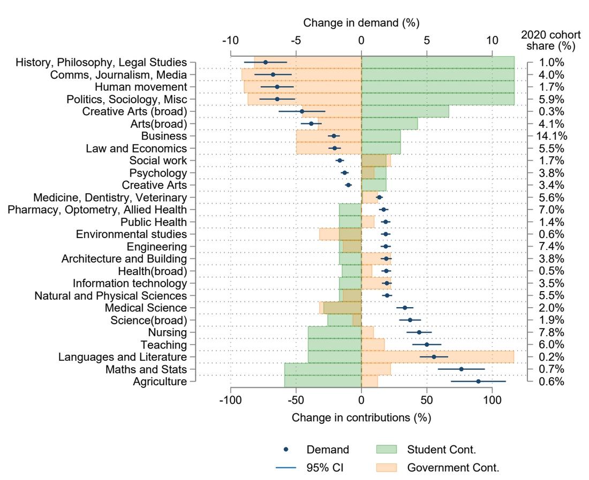
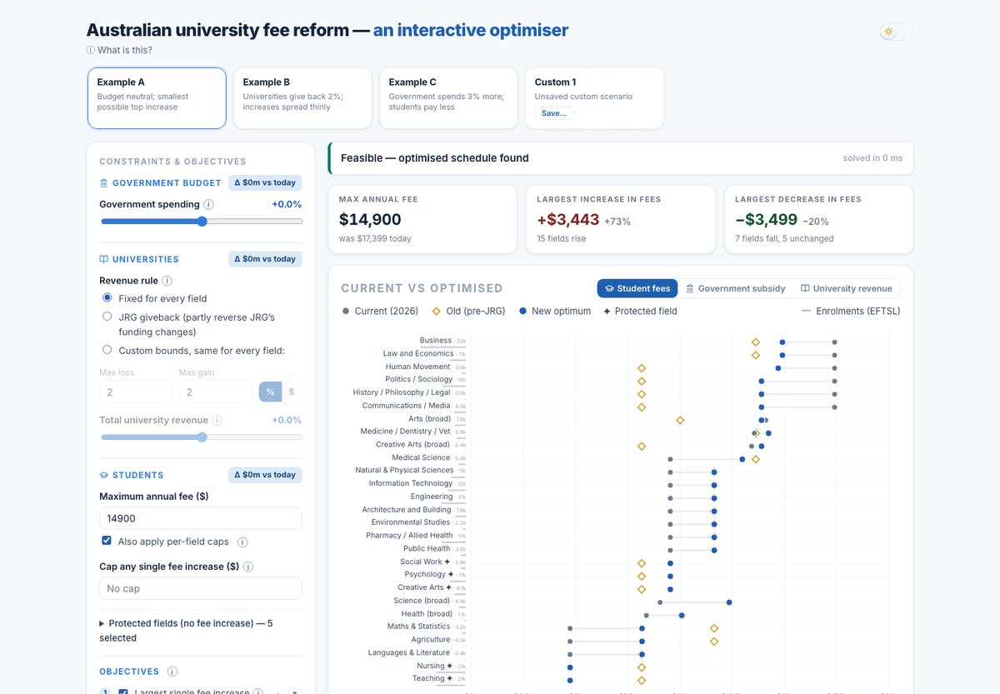

Max Yong
I'm an economist studying how policy shapes the choices people make — from university fees to household finances, and more. I'm currently at Harvard, where I study public policy and teach personal finance, and my writing on economics, finance, and education appears regularly across Australia's major mastheads. My research underpins a 2026 submission to the Australian Senate on reforming university fees.
 LinkedIn
LinkedInWhere I work and study
Harvard Kennedy School ↗
Master in Public Policy candidate, as a 2025 John Monash Scholar (ANZAC Centenary Scholarship)

Harvard University, Department of Economics ↗
Teaching Fellow — Personal Finance (ECON 70) and Industrial Policy (BGP 622)

University of Melbourne ↗
Honorary Fellow, Centre for the Study of Higher Education; research with the Melbourne Institute
The Age & The Sydney Morning Herald ↗
Contributor — columns on economics, finance, and education

Recent pieces
Do fees change what students study?
My research with the Melbourne Institute uses Australia's Job-ready Graduates reform — the largest re-pricing of degrees in a generation — to measure how students respond to university fees. The findings have been cited in the Australian Universities Accord and the Productivity Commission's five-year inquiry.

From evidence to policy design
In 2026 I made a submission to the Australian Senate proposing a budget-neutral redesign of the Job-ready Graduates fee structure. Alongside it I built an interactive optimiser where you can set the constraints — government spending, university revenue, fee caps — and see the optimal fee schedule it produces.
